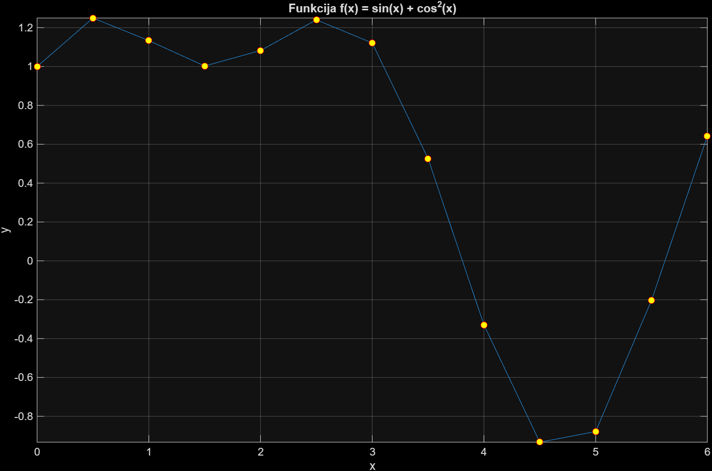
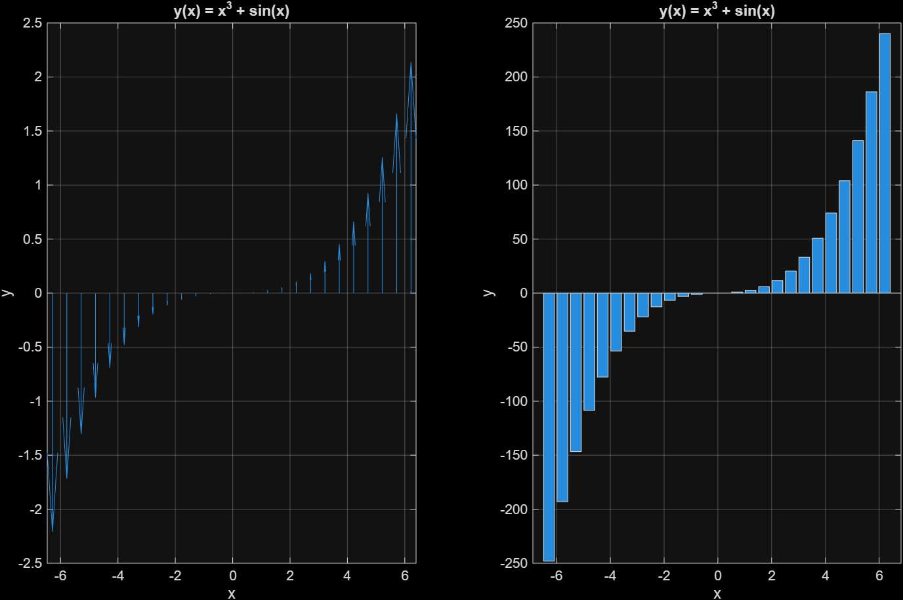
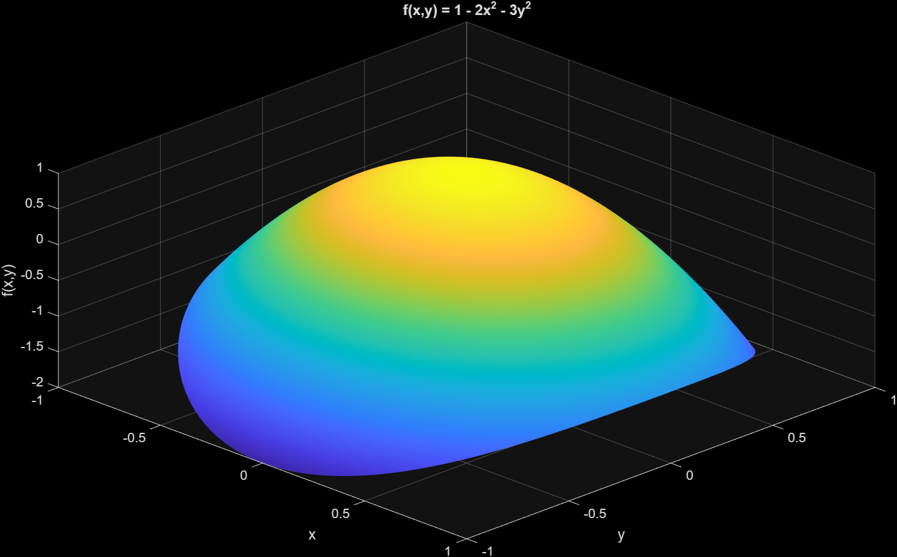
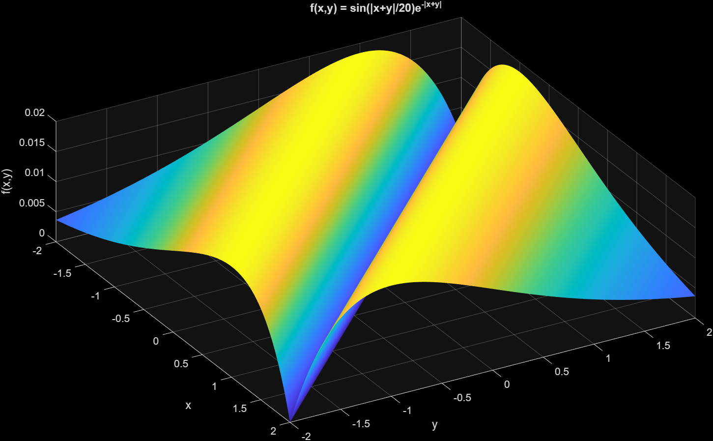

Atlikti darbai
MATLAB laboratorinių darbų grafikai: vienmatės ir dviejų kintamųjų funkcijos, skirtingi vizualizavimo būdai.
- Visi
- 2D grafikai
- 3D paviršiai


Funkcija f(x) = sin(x) + cos²(x)
Funkcijos reikšmių skaičiavimas intervale x ∈ [0; 6] žingsniu 0,5. Taškai pažymėti žymekliais ir sujungti linija, matomi maksimumai (~1,25) ir minimumas (~−0,93).


Funkcija y(x) = x³ + sin(x)
Tos pačios funkcijos vaizdavimas dviem būdais viename lange (subplot): kairėje specialus linijinis grafikas, dešinėje stulpelinė diagrama (bar), rodanti kubinį reikšmių augimą.


Paviršius f(x,y) = 1 − 2x² − 3y²
Dviejų kintamųjų funkcijos 3D paviršius srityje x, y ∈ [−1; 1]. Elipsinis paraboloidas su maksimumu taške (0; 0), spalvų žemėlapis atspindi aukštį.


Paviršius f(x,y) = sin(|x+y|/20)·e^(−|x+y|)
Funkcija, priklausanti nuo sumos x+y, srityje x, y ∈ [−2; 2]. Paviršius simetriškas tiesės x+y = 0 atžvilgiu, o reikšmės siekia apie 0,02.